公告！本篇卡卡愛呆丸是濃縮版滴！沒辦法
我現在發現單眼的壞處就是快門太快，一下就噴出太多照片！
一時之間根本修不完嘛！
＝＝＝＝＝＝＝＝＝＝＝＝＝＝＝＝＝＝＝＝＝＝＝＝＝＝＝＝＝＝＝
當天４歲生日的小壽星~橘子小妞！  跟橘子姑姑一樣都是美女 ^^
跟橘子姑姑一樣都是美女 ^^
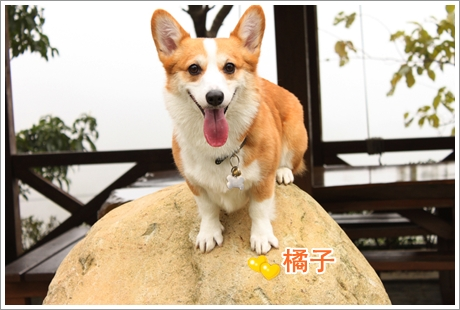
參加生日趴的雙卡，尤其是卡ㄋㄟ~超開心的！
輕輕鬆鬆就可以拍到一堆他飛起來的畫面，反觀要捕捉我家阿卡的厚！
真的是可遇不可求，怎嘛拍就是有一隻腳黏在地上！
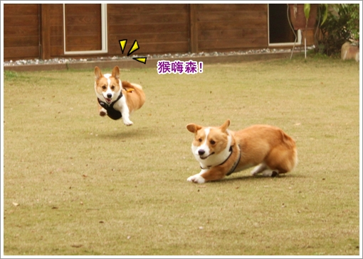
還有帥呆的副堂主，每次拍KUMA都覺得他真的很上相吶！
拍出來的照片都好英挺，完全不會出現摩卡卡那種眼歪嘴斜的面貌
形象超好的啦！
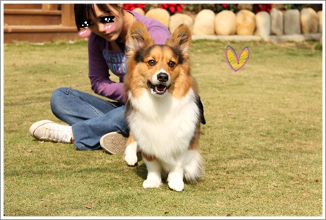
你看看，明明就是好好要拍KUMA
結果摩卡卡又一副外星人貌出現在照片中！
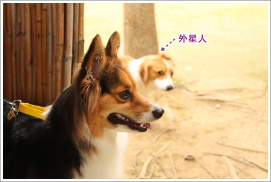
那天橘子的阿公也有來歐！
極愛捉弄橘子的卡ㄋㄟ故意跟爺爺撒嬌惹怒橘子！哈哈
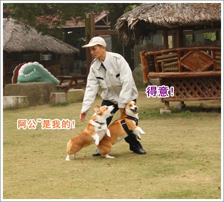
不過他們倆吵架的方式也就邊跑邊罵如此而已！
倒也不太會真的打起來！
愛黏卡ㄋㄟ的摩卡卡也一直跟著跑（真的是愛到卡慘死！XD）
但速度永遠都追不上!哈哈...所以他就算跟在旁邊也完全沒有影響！
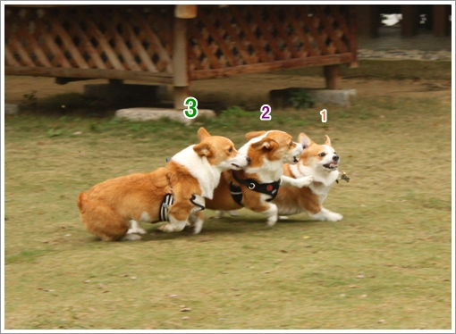
自顧不暇了還想保護卡ㄋㄟ！
不過卡內的臉被摩卡卡的口水弄的好像上了老妝歐！小老頭臉好好笑！
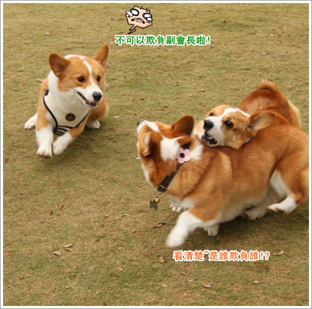
可愛的橘子妹妹跟小壽星合照！
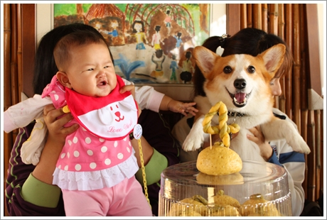
橘子姑姑一家還手工自製的造型饅頭，愈嚼愈香愈好吃歐！
我那天豬附身，明明很飽了但上車後又把外帶的兩顆嗑掉！
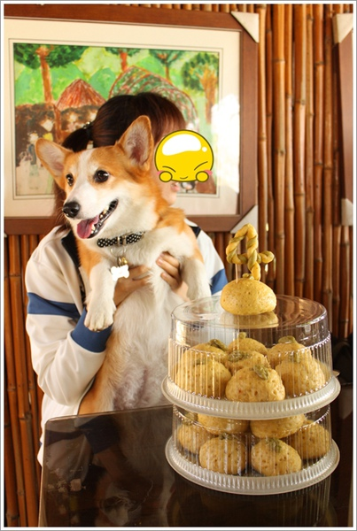
林～樂～長～你真的是有夠長的！哈哈
為了吃吃也太拼命了吧！橘子都看傻眼了！
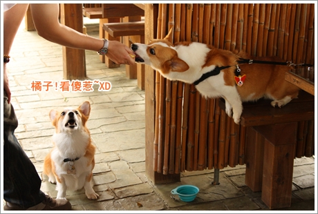
那天卡ㄋㄟ一口叼走橘子姑姑手中的饅頭一口吞，
馬上被他阿木打入大牢關起來！
但是大家對他有情有義，一起手牽手探監去！ 
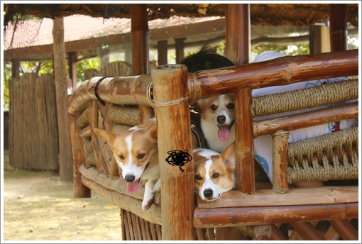
尤其是摩卡卡，三不五時就往監獄報到！
對他娘親我有那嘛忠心耿耿就好了！（吃醋！）
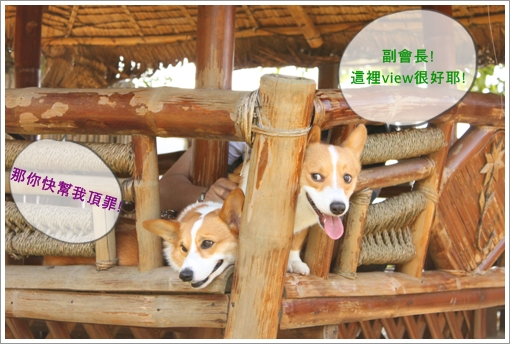
對照著卡ㄋㄟ的苦臉！我想卡卡真的是去玩的！完全沒有同理心 哈哈
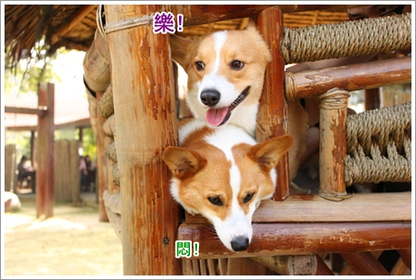
還放肆的ㄎㄨㄟˋ頭在副會長的頭上！ 
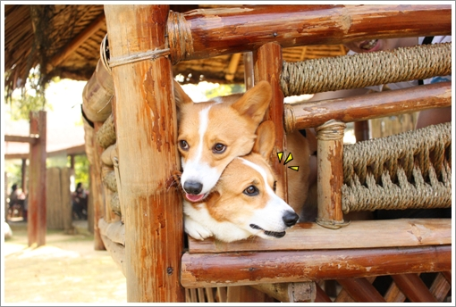
今天還要來給媽媽桑驗收一下新的雜耍～跳圈圈！
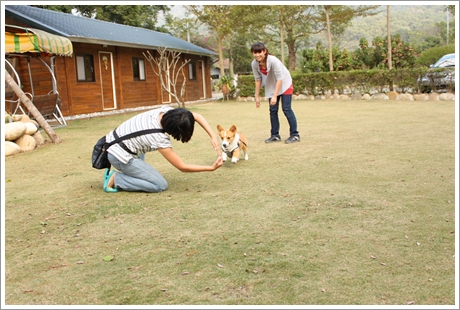
但～緊要關頭居然......踩剎車惹!!
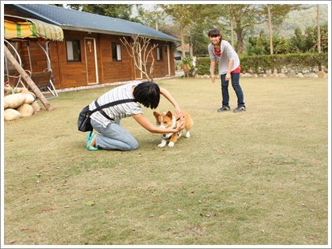
再緩慢的跨 過 
真是漏氣，明明在家都溝通良好的說！
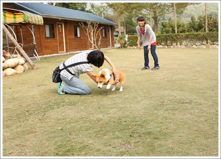
卡ㄋㄟ示範超厲害的！居然飛過摩卡卡！
我們回家要再練習，下次雙卡跳圈圈一定要成功啦！
然後 ，再下次要挑戰雙卡 跳火圈！
哈哈哈～期待吧！看到時候是誰的手被點火！ 
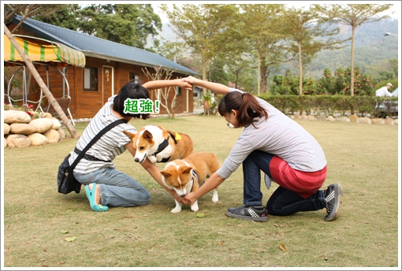
中場休息，可愛的兩個寶偎在一起睡午覺！
我好喜歡這兩張照片，希望他們兩個永遠都相親相愛！
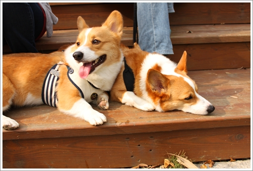
看到卡卡很黏卡ㄋㄟ，都覺得狗狗之間友情也好珍貴！^^
找到一個很麻吉的玩伴真的替卡卡開心～
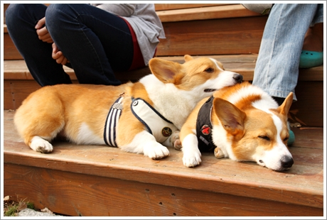
還有瑪麻的寶系列~
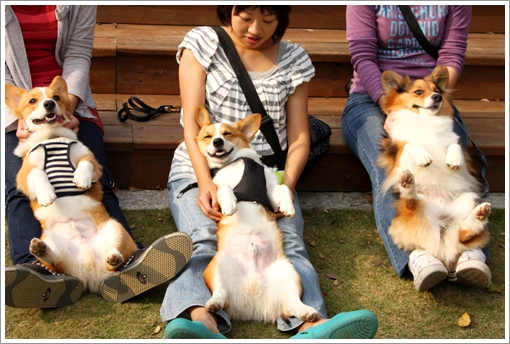
卡ㄋㄟ跟 KUMA都很自在舒服的躺在瑪麻的腳上！
又是你～許摩卡！一直在那扭動不安份！
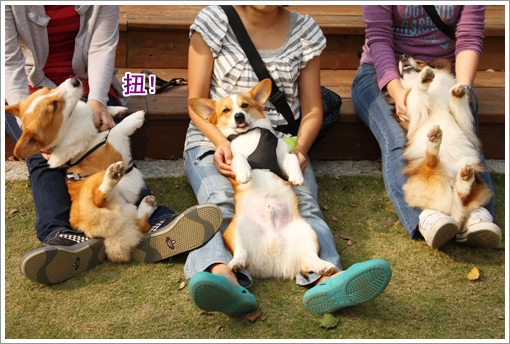
結果又出糗了啦！大頭掉到麻麻的跨下深淵～！
笑翻我們所有人！
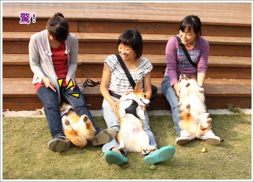
橘子生日趴踢大成功～
感謝橘子姑姑的邀請，摩卡卡也要祝福橘子姐姐生日快樂歐！
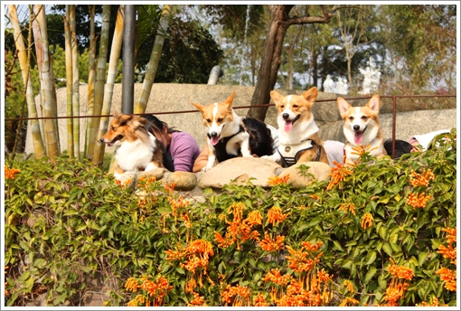
當然，苗栗的景點又收集到一個惹！歐耶～